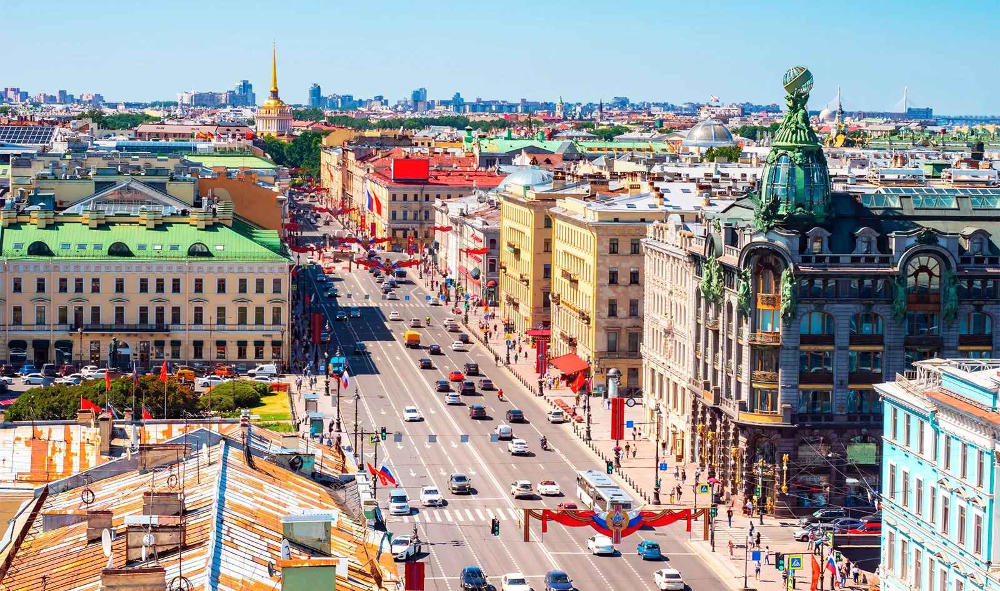
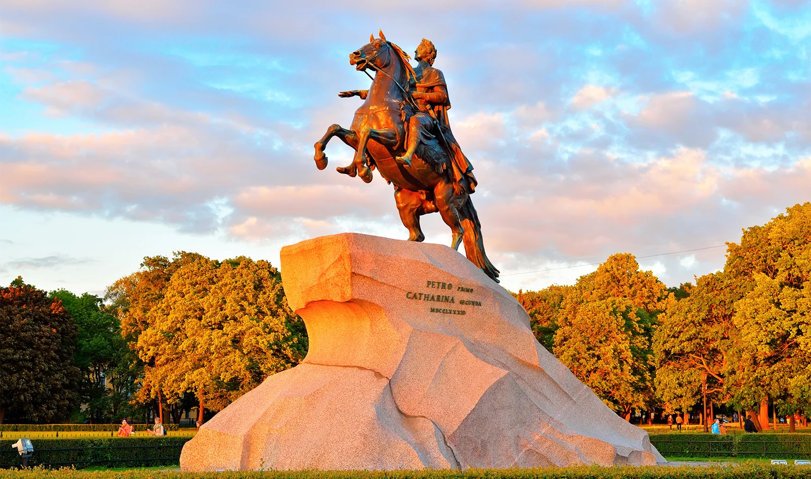
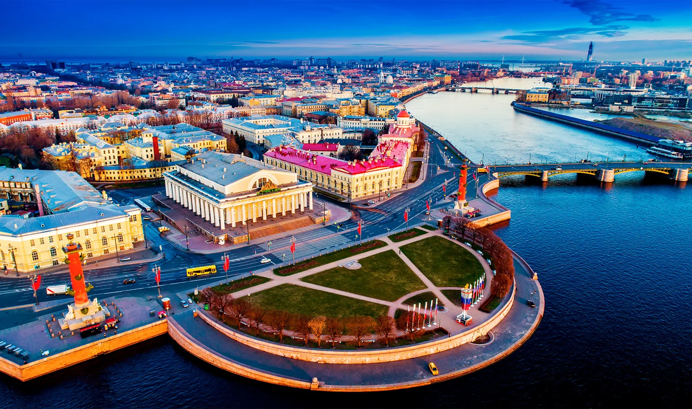

Районы Санкт-Петербурга: где лучше остановиться
Автор: О! Редакция
Сравнение районов для проживания в поездке. Помогает соотнести расположение отеля с прогулочными планами, характером квартала и удобством передвижения по городу.
Читать полную статью на блоге Островка →



Фото: FOTOGRIN / Shutterstock.comИсточник изображения

Фото: Popoudina Svetlana / Shutterstock.comИсточник изображения


Фото: Maxim Mitsun / Shutterstock.comИсточник изображения

Фото: KrimKate / Shutterstock.comИсточник изображения


Фото: FOTOGRIN / Shutterstock.comИсточник изображения